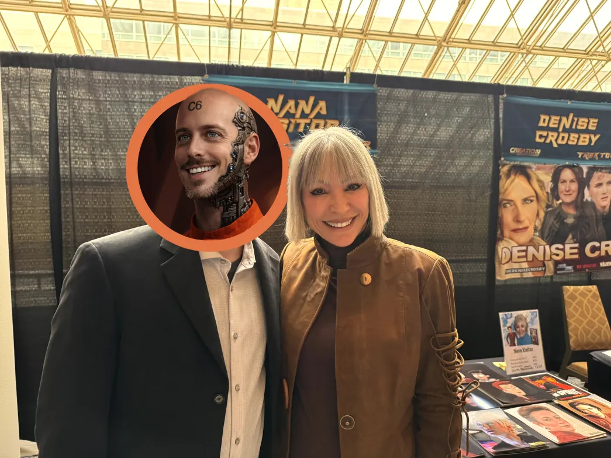
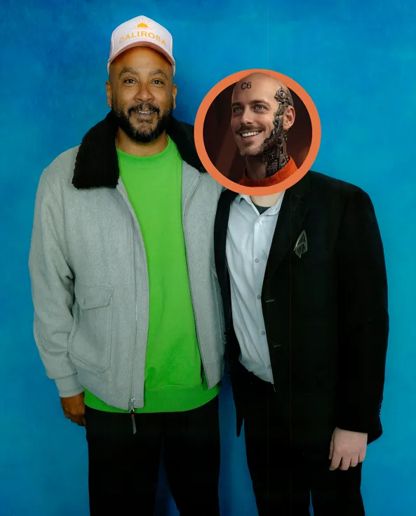
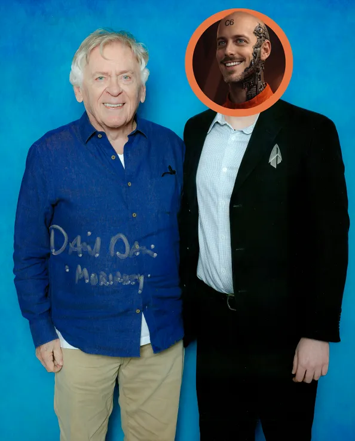
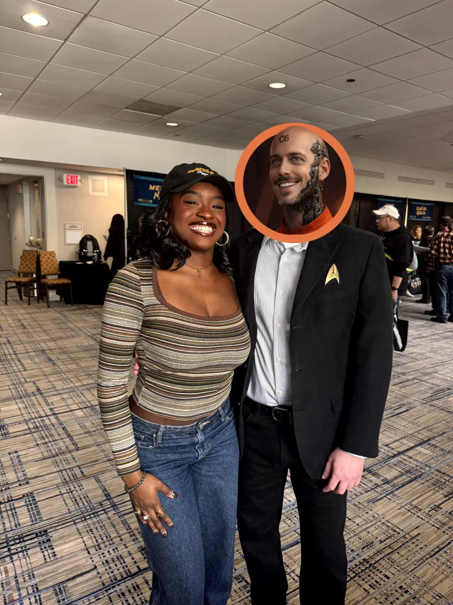

@c6reviews.
@c6reviews.Believe it or not, I had never been to a Star Trek convention before November 14-15, 2026, when Creation Entertainment held its Trek con in Philadelphia for the very first time. I figured since it was their first time in Philly (which is within a reasonable driving distance of me), and it was Trek's 60th year celebration, that I should go check it out. I had a great time!
Let me get this part out of the way though: my very first impression wasn't the best, but I quickly forgot about it and moved on. At registration, where I was to scan my ticket and get a wristband, there were two women sitting behind the desk with customers in front of them both. One of the customers finished their transaction and walked away, and I (incorrectly) assumed that either person behind the desk was available to get me registered. So I walked up to the one who had become available. She asked if I had a daily or weekend registration. I said weekend, and she said she only did daily registration and pointed me to two more people further down the line. Well, those two people looked at me like I had lost my mind, so I just said “I'm just trying to figure out where to go”. Well, by this point, the other lady had finished up with her customer and was angrily calling me back saying that she needed to scan my ticket. Okay, fine, apparently only one of those first two women were there to scan tickets. My mistake.
I returned to the start of the queue just as another visitor walked up, and since I felt awkward already, I told her she could go in front of me. But then the first lady behind the counter hollered “No, you're here now, just get up here!”. Fine. Got my ticket scanned and I got my wristband. I chalked this up to the woman probably having worked for Creation Entertainment for too long and was tired of dealing with the public when they accidentally didn't follow her unclear procedures. I imagined her running registration for dozens of the company's events and being very comfortable in her job. Far be it from me to suggest this, but if your primary responsibility is to work with the public and you don't have any patience for the public, then you need to find something different to do. Especially if you are the first person that people interact with upon arrival at the event.
Sorry, I had to vent. Everything after that was pretty great! My first stop was at Nana Visitor's table, and I got a nice photo with her. She was an absolute delight to talk to, very warm and inviting. And so my weekend was off to a great start (now that I had already forgotten about that frustrated woman at registration).

As you may know, Star Trek: Deep Space Nine is my favorite of all the Trek series, so I had planned photos with Nana Visitor (Kira Nerys), Terry Farrell (Jadzia Dax), and Cirroc Lofton (Jake Sisko). Also in attendance from DS9 were Chase Masterson (Leeta), Nicole de Boer (Ezri), Diane Salinger (Lupaza), and J.G. Hertzler (Martok), and listen, I love them all, but these photo ops all cost money and I wasn't trying to spend an entire fortune getting photos with the entire cast. Ha! Unfortunately, on Friday, November 13th there was a nationwide aviation ground stop that lasted nearly five hours. This caused flights to be delayed and cancelled, and that led to Terry Farrell not being able to make the convention. I do blame the current administration for denying me my chance to meet Terry. Of all the nationwide repercussions of the ground stop, denying me access to Terry was clearly the most heinous.
I explored the vendor room, which had a lot of neat things, but I did not see any of those leather jackets from Star Trek: Picard on sale... which maybe was a good thing, because did I really need to drop a couple hundred on one of those? Hmm. Anyway, eventually it was time for my scheduled photo op with Cirroc Lofton. He was energetic and happy to greet all the fans. The professional photo ops are definitely a bit of an assembly line though, so there's not really a chance to chat.

There were several panels and other programming in the main theatre, but I found out that I wasn't quite as interested in sitting in a room and listening to Q&A sessions that I could just watch online. When all the talent was available for direct interaction at their convention tables, I was much more interested in talking with them directly, even if only for a few minutes. But that's just me! Eventually Day 1 drew to a close and I retreated to my hotel room. I think one cool thing is that the stars and the fans really do share the same space. I ran into Moriarty (Daniel Davis) in the bathroom! If I had thought on my feet a bit quicker, I should have looked at him and said “Oh no, not again. Computer, end program!” But actually, the fans are so respectful that the stars can usually just walk around without any issues.
Well, that is, most of the stars. Jeri Ryan (Seven of Nine from Star Trek: Voyager) was there, and I actually didn't see her one single time all weekend. She had some time on stage in the theatre (which I skipped), but otherwise I think her security was a bit tighter than anyone else's. Tim Russ (Tuvok) was also somewhat sequestered, and neither of them had tables out where the public could readily meet them. Anyway, after my encounter with Moriarty in the bathroom, I did actually have a photo op scheduled with him, so I took care of that and got him to autograph it, too.

At some point the day before, the combadge I was wearing had fallen, hit the ground, and it broke into two pieces (the silver delta separated from the grey background), so in these photos I had to gingerly place the delta back onto the background and then stand very still until the picture was taken so it didn't fall off again. I spoke with Daniel Davis at his table a bit after that. I mentioned his cameo appearance in Star Trek: Picard, and he said it was a surprise and an honor to get the call to reprise his role. He also said that he then got it in his head that Picard would finally make good on his promise to free Moriarty from the holodeck, and lamented the fact that the story didn't quite work out that way. Ha!
Besides Terry Farrell, another person that was unable to attend because of the ground stop was Anthony Rapp (Paul Stamets from Star Trek: Discovery). I had originally planned photos with both of them, but since I was going to get a refund for those missed opportunities, I decided to get one more impromptu photo, this time with Celia Rose Gooding (Nyota Uhura from Star Trek: Strange New Worlds). She was also a lot of fun to talk to.

One event I did attend in the main theatre was a trivia game. I played with 87 other fans. There were three winners, and I was not one of them, but that's okay, because we all got consolation prizes! I was somewhat amused at the trivia game, though. This was a Star Trek convention after all, so even the “easy” questions were geared toward Trek experts, and not the casual viewer. I played in a group of 30, and I made it a few rounds before I got eliminated.
All of the stars were accompanied by their assistants at their tables. At one point I went up to Todd Stashwick's table (Captain Liam Shaw from Star Trek: Picard) and spoke with his assistant while Todd was talking to another visitor. She asked if I wanted a photo or autograph, and I politely said I just wanted to say “Hi”. Once Todd was available, I opened with “You were so rude...” and I think I felt his assistant immediately clenching. But I continued “...to my heroes, Picard and Riker, and yet somehow you were still so likable and I couldn't stay mad at you!” and that's when I felt his assistant unclench. Heh. I would never cause trouble like that!
All in all, I had fun. Honestly, this is probably just a one-time thing for me, though. It's a great experience, but I think the only thing that would draw me back in the future is if there were several more stars there that I'd want to talk to. Also, just for me, I'd probably save some cash and get a one-day registration instead of both days, just because I could have satisfactorily accomplished everything I wanted to in a single day. But for my first time, taking the whole weekend was definitely worth it! ◼